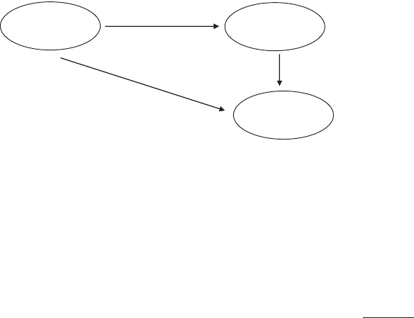

Does Human Capital Matter? A Meta-Analysis of the Relationship
Between Human Capital and Firm Performance
T. Russell Crook
University of Tennessee, Knoxville
Samuel Y. Todd
Georgia Southern University
James G. Combs
University of Alabama, Tuscaloosa
David J. Woehr
University of North Carolina–Charlotte
David J. Ketchen, Jr.
Auburn University
Theory at both the micro and macro level predicts that investments in superior human capital generate
better firm-level performance. However, human capital takes time and money to develop or acquire,
which potentially offsets its positive benefits. Indeed, extant tests appear equivocal regarding its impact.
To clarify what is known, we meta-analyzed effects drawn from 66 studies of the human capital–firm
performance relationship and investigated 3 moderators suggested by resource-based theory. We found
that human capital relates strongly to performance, especially when the human capital in question is not
readily tradable in labor markets and when researchers use operational performance measures that are not
subject to profit appropriation. Our results suggest that managers should invest in programs that increase
and retain firm-specific human capital.
Keywords: human capital, performance, resource-based theory, meta-analysis
Maximizing the impact and efficiency of human capital in
organizations is one of the cornerstones of industrial and organi-
zational psychology inquiry. It is commonly believed that such
maximization benefits individuals as well as the organizations in
which they work. Indeed, research in applied psychology and
strategic human resource management clearly indicates that invest-
ing in human capital can yield positive individual- as well as
organization-level performance outcomes (e.g., Becker & Huselid,
2006; Bowen & Ostroff, 2004; Huselid, 1995; Le, Oh, Shaffer, &
Schmidt, 2007; Subramony, Krause, Norton, & Burns, 2008).
Thus, a key tenet within micro organizational inquiry is that the
human capital available to an organization has potentially impor-
tant performance implications (Takeuchi, Lepak, Wang, & Takeu-
chi, 2007).
Within macro organizational inquiry, understanding the key
determinants of organizational performance has long been an im-
portant goal (Rumelt, Schendel, & Teece, 1994; Summer et al.,
1990). Over the last 15 years, researchers working to develop a
resource-based theory (RBT) of competitive advantage have high-
lighted the role of human capital as a key factor explaining why
some firms outperform others (Acedo, Barroso, & Galan, 2006;
Barney, 1991; Barney, Wright, & Ketchen, 2001; Coff, 1999).
RBT argues that the heterogeneous distribution of valuable re-
sources among firms—such as human capital—explains perfor-
mance differences. Firms possessing valuable resources that others
cannot easily duplicate or substitute for will outperform competi-
tors lacking such resources (Barney, 1991; Peteraf, 1993). As
efforts have progressed to describe the types of resources most
likely to shape competitive advantage and performance, research-
ers quickly converged on knowledge embedded in human capital
as perhaps the most universally valuable and imperfectly imitable
resource (Coff, 1997; Grant, 1991, 1996; Kogut & Zander, 1992).
RBT is now well established in the strategic management liter-
ature (Barney, 2001), its application is growing within micro
research (e.g., Gong, Law, Chang, & Xin, 2009; Takeuchi et al.,
2007), and efforts are beginning in earnest to take stock of findings
related to its key predictions (e.g., Barney & Arikan, 2001; Crook,
Ketchen, Combs, & Todd, 2008; Newbert, 2007). With respect to
the particular role of human capital on performance, however,
Newbert reported that of the 33 tests of the human capital–perfor-
mance relationship he identified in the literature, just 11 (33%)
supported the notion that human capital is positively and signifi-
cantly related to firm performance.
This article was published Online First January 17, 2011.
T. Russell Crook, Department of Management, College of Business
Administration, University of Tennessee, Knoxville; Samuel Y. Todd,
Department of Sport Management, College of Health and Human Sciences,
Georgia Southern University; James G. Combs, Department of Manage-
ment, and Marketing, Culverhouse College of Commerce, University of
Alabama, Tuscaloosa; David J. Woehr, Department of Management, Belk
College of Business, University of North Carolina–Charlotte; David J.
Ketchen, Jr., Department of Management, College of Business, Auburn
University.
We thank Russ Coff, Paul Harvey, and Brad Jones for their input on this
paper.
Correspondence concerning this article should be addressed to T. Russell
Crook, Department of Management, College of Business Administration,
University of Tennessee, Knoxville, TN 37996. E-mail: trc@utk.edu
Journal of Applied Psychology © 2011 American Psychological Association
2011, Vol. 96, No. 3, 443– 456 0021-9010/11/$12.00 DOI: 10.1037/a0022147
443
Although Newbert (2007) collected this evidence from just
seven articles, this finding suggests—in contrast to RBT and micro
research—that human capital might not be an important determi-
nant of firm performance. There are at least three potential reasons
for the contradictory evidence Newbert presented. The first is that
the value of human capital might be path dependent. RBT suggests
that truly unique and valuable skills likely develop over time (Coff,
1997; Grant, 1996; Penrose, 1959). If this is the case, cross-
sectional studies that do not capture the lagged effects of invest-
ments in human capital or changes in performance over time from
a buildup of superior human capital might be less likely to find
effects.
A second reason for the seemingly contradictory evidence is that
the “strategic factor market” (Barney, 1986) for labor is more
efficient for some types of human capital than others. People with
valuable but general (e.g., industry experience) human capital can
move among the highest bidding competitors until their costs
roughly equal the value that they add (Coff, 1997). Firm-specific
human capital, in contrast, is valuable because it helps employees
make decisions that are congruent with a firm’s unique strategy,
organizational context, and competitive environment (Kor &
Mahoney, 2005). Moreover, it is not easily transferred and applied
in other firms, and this makes it difficult for employees to demand
compensation that is commensurate with their full value to the firm
(Becker, 1983). Thus, seemingly equivocal results from prior
research might be due to a failure to separate out the different
effects that firm-specific and general human capital have on firm
performance.
A third potential reason for the seemingly conflicting results is
due to what has become known within RBT as the appropriability
condition. According to Coff (1999), there are numerous stake-
holders that all compete for a share of the profits. When human
capital creates profits, the individuals possessing such capital are
more likely able to leverage it to gain higher pay (Coff, 1997).
Even if the employees possessing the human capital do not appro-
priate the value that they generate, their managers might (Coff,
1999). Under such conditions, there might not be a tight link
between human capital and global measures of firm performance
(e.g., stock returns), because some of the profits that would oth-
erwise be attributable to superior human capital are appropriated
by employees and managers in the form of higher pay before this
shows up in global organizational performance measures (Barney
& Clark, 2007). Consequently, the value created by human capital
might not translate into higher performance, at least in terms of
global performance metrics.
In short, there are several potentially important theoretical mod-
erators of the human capital–performance relationship. Given the
prominence of human capital as a determinant of performance
differences within micro and macro inquiry, the initial evidence
suggesting that the empirical evidence is mixed, and theory sug-
gesting that there are important moderators of the human capital–
performance relationship, a meta-analysis designed to clarify ex-
tant evidence seems both timely and warranted. Meta-analysis
quantitatively aggregates prior studies’ empirical findings in order
to detect whether a relationship exists and to estimate the magni-
tude of the effect by taking into account study artifacts, such as
sampling and measurement error (Hunter & Schmidt, 2004). Meta-
analysis also allows investigation of moderators that help explain
why results vary systematically among studies of the same rela-
tionships.
Grounding our study in RBT, we investigate three potential
moderators: (a) path dependence (i.e., cross-sectional vs. longitu-
dinal study designs), (b) firm-specific versus general human cap-
ital, and (c) operational versus global firm performance measures.
Estimating the overall effect of human capital offers a benchmark
for understanding the extent to which it broadly impacts perfor-
mance. Our tests for moderation support RBT, suggesting that it
matters where human capital resides and how researchers attempt
to capture it.
RBT, Human Capital, and Performance
The term human capital refers to the knowledge, skills, and
abilities (KSAs) embodied in people (Coff, 2002). It includes not
just factual, “how-to” KSAs that can be made explicit but also tacit
KSAs, which can often be difficult to articulate (Polanyi, 1966).
Researchers have long understood that human capital, especially
one’s education and training, plays an important role in organiza-
tions (Becker, 1983; Mincer, 1974). Compensation for employees
and managers is strongly related to the education and experience
they possess (Becker, 1964; Fisher & Govindarajan, 1992; Harris
& Helfat, 1997), and investments in training designed to build
human capital influence performance (Combs, Liu, Hall, &
Ketchen, 2006). Taken together, KSAs, including the experiences,
education, and training managers bring, have consistently been
viewed as central drivers of strategy and performance (Andrews,
1965; Chandler, 1962; Hambrick & Mason, 1984).
The introduction of RBT (Barney, 1986; Lippman & Rumelt,
1982) offered a theoretical explanation for why superior human
capital might lead to sustainable performance advantages for firms.
Valuable resources must be in short supply and semipermanently
tied to the firm in order to deliver lasting above-average perfor-
mance. Otherwise, competitors would simply purchase the re-
sources (or resources that perform the same function) and compete
away any advantage the firm might have (Peteraf, 1993). Re-
searchers quickly pointed to knowledge embedded in human cap-
ital as being among the most universal of resources that meet these
criteria (Grant, 1991; Kogut & Zander, 1992). Indeed, an entire
literature, called the knowledge-based view, emerged from RBT,
arguing that knowledge embedded within people is ultimately the
only source of competitive advantage (cf. Grant, 1996).
Overall, human capital has a long history in strategic manage-
ment of being viewed as a source of value, both at the managerial
level (Andrews, 1965; Chandler, 1962) and the individual level
(Becker, 1964, 1983). The reason is that it is unevenly distributed
among firms and, at least with respect to superior managers and
individuals, often in short supply. A study by Castanias and Helfat
(1991) elaborated on this notion; they asserted that superior human
capital—such as an above-average CEO—is rare indeed. Finally, it
is difficult for competing firms to assess, copy, and/or acquire
human capital, at least at a cost that makes doing so worthwhile
(e.g., Coff, 2002). Accordingly, firms possessing superior human
capital should outperform others. Thus, we begin with a baseline
prediction:
Hypothesis 1: Human capital is positively related to perfor-
mance.
444
CROOK ET AL.
Contingencies Surrounding the Human Capital–
Performance Relationship
As suggested by Newbert (2007), at least preliminarily, the
effect of human capital on firm-level performance seems to vary
considerably. RBT has offered three concepts—path dependence
(Peteraf, 1993), imperfect strategic factor markets (Barney, 1986),
and appropriability (Coff, 1999)—that we believe might help
explain variance in the relationship found among studies.
Path Dependence and Longitudinal Relationships
RBT is concerned primarily about long-term, or sustainable,
advantages (Barney, 2001). The possession of human capital might
provide an explanation for these sustained advantages, because
valuable, rare, and hard to copy or imitate KSAs typically develop
over time and in a path-dependent way. Penrose (1959) was first to
describe the path-dependent effect of human capital on firms. She
explained why the time needed to develop managerial talent placed
a limit on existing managerial efforts to expand. In addition, the
path-dependent way in which human capital is built likely in-
creases heterogeneity among firms and thus makes it more likely
that firms benefit from prior investments in human capital. In other
words, there might be a temporal component that might not be
captured unless a study takes a longer term view of the relationship
between human capital and performance.
Because of this, cross-sectional studies may not allow research-
ers to capture the full utility of human capital and how it influences
performance over time (Rouse & Daellenbach, 1999). One reason
is that there is likely to be some lag period after a firm builds or
acquires superior human capital before the resulting impact is
reflected in performance measures. However, because an unknown
number of firms in any cross-sectional design are potentially in
this lag period, such designs will underestimate the overall impact
of human capital on firm performance. Similarly, cross-sectional
designs capture a blend of short- and long-tenured human capital
but will likely not capture changes in performance due to increased
investments in human capital. Lagged and longitudinal designs, in
contrast, should better capture the eventual results of human cap-
ital on firm performance. This is because sample firms are unlikely
to be caught in that period wherein programs introduced by newly
built human capital have not yet impacted performance. Thus, we
made the following prediction:
Hypothesis 2: The relationship between human capital and
performance is stronger among studies using longitudinal
data than among studies using cross-sectional data.
Path Dependency, Imperfect Strategic Factor Markets,
and Firm-Specific Human Capital
The concept of path dependency suggests that the value of
resources such as human capital increases as they become idio-
syncratic to solving problems that are specific to the firm’s unique
competitive context (Grant, 1996; Penrose, 1959). In line with this
concept, recent research suggests that the value of human capital
increases as it becomes increasingly firm specific (e.g., Dutta,
Narasimhan, & Rajiv, 2005). Kor and Mahoney (2005), for exam-
ple, reported that managers “with tacit knowledge of employee
skills and interests can more accurately dedicate funds to high-
margin R&D projects and also can do a superior job of matching
skills to R&D projects, resulting in superior economic perfor-
mance” (p. 495). When their firm-specific human capital (e.g.,
years of experience with a firm) increases, managers might be-
come more effective resource allocators within firms, thus en-
abling better decisions and enhanced performance.
For firms to retain any performance advantage attributable to
human capital, however, competitors must not be able to purchase
the resource in a competitive “strategic factor market” (i.e., labor
market; Barney, 1986). In contrast to general human capital that all
competitors need, firm-specific human capital is tied semiperma-
nently to the firm and is thus very difficult to trade or exchange
without loss of value (Chi, 1994). According to Coff (1997, p.
377), employees are “free to quit at will.” Individuals with general
human capital can quit more easily because their nonspecific skills
can be more easily “traded” in competitive labor markets. Coff
described a situation in which stockbrokers—who possess mostly
general capital—became disenchanted with their present em-
ployer, in part, because they were being underpaid. However,
because brokers’ skills could be applied in other contexts, other
firms hired the brokers and, in the process, bid up wages. Conse-
quently, when human capital is general in nature, wages and the
threat of turnover are higher because the labor market is more
competitive. Taken together, the potentially positive effects of
specific human capital combined with the potentially negative
effects of general human capital suggest that the former will have
beneficial performance implications. Thus, we made the following
prediction:
Hypothesis 3: The relationship between human capital and
performance is stronger when measures capture specific hu-
man capital rather than when measures capture general hu-
man capital.
Appropriability and the Choice of Dependent Variable
The appropriability condition suggests that linking valuable
resources to global firm performance measures underestimates
their potentially positive effects (Collis & Montgomery, 1995).
Under conditions wherein powerful stakeholders exist, such as
dominant unions or influential top management team members,
these stakeholders might use their power to appropriate potential
profits (Coff, 1999). According to Crook et al. (2008), “When
stakeholders are powerful, they may successfully extract above-
market prices for their contributions to the organization” (p. 1145).
An important implication is that extracting such prices reduces the
positive impact of resources, such as human capital, on the firm’s
global performance measures, such as returns on assets (ROA;
Coff, 1999).
In addition to the potential effects of powerful stakeholders,
organizational performance is by its nature a highly aggregated
construct (Richard, Devinney, Yip, & Johnson, 2009), and global
measures of firm performance—such as ROA or returns on sales—
might not capture the real and sometimes competing impacts of
different resources (Ray, Barney, & Muhanna, 2004). Instead,
performance advantages are more likely to be revealed in opera-
tional performance measures (e.g., customer service satisfaction or
innovation) that are unaffected by appropriability and are closer to
445
HUMAN CAPITAL META-ANALYSIS

the actual competitive advantages created by superior human cap-
ital. Because operational performance measures capture the per-
formance of specific value chain activities within the firm, but not
the firm globally, the performance implications of human capital
should impact them more directly. Thus, we predicted that oper-
ational performance measures are more likely to capture the effects
of human capital on performance:
Hypothesis 4: The relationship between human capital and
performance is stronger when performance is measured with
operational performance measures than when it is measured
with global performance measures.
Method
Sample
Our objective was to collect the population of studies that
examined whether human capital relates to performance. We be-
gan by conducting a keyword search of ABI Inform, Business
Source Premier, and JSTOR using the keywords resource,
resource-based, knowledge-based, human capital, and perfor-
mance. We used 1991 as the starting date for the search because
that was the year Barney (1991) published his landmark paper and
because 1991 is also the generally accepted year in which RBT
became popular (Barney et al., 2001). Our search yielded 66 usable
studies with 68 samples involving 12,163 observations.
1
These
studies are listed in our reference section and are marked with an
asterisk. The number of studies is significantly larger than the
seven studies involving human capital examined by Newbert
(2007).
To be considered usable in our meta-analysis, a study had to
contain a measure of human capital, contain a measure of perfor-
mance, and report the bivariate relationship (i.e., correlation) be-
tween the two. Our major constructs and how we coded each
primary study are reported in Table 1. To code for the main effect
described by Hypothesis 1, we recorded the correlation between a
human capital measure (e.g., top management team executive
experience; Combs & Ketchen, 1999) and a performance measure
(e.g., ROA). To test for the moderator effects described in Hy-
potheses 2–4, we coded each study according to a study charac-
teristic that reflected the relevant underlying theoretical concept
from RBT. In particular, to capture effects due to path dependency
(Hypothesis 2), we coded whether a study relied on cross-sectional
or longitudinal data. We coded as “cross sectional” those studies
wherein human capital and performance measures were taken at
the same time. Building on the guidance offered by Ployhart and
Vandenberg (2010), we coded as “longitudinal” those studies
wherein performance measures were taken after human capital
measures. Firm-specific human capital should be subject to greater
strategic factor market imperfections. Thus, for Hypothesis 3, we
grouped studies according to whether the human capital under
investigation was general or firm specific. Finally, we captured the
appropriability condition by dividing effects according to whether
the dependent measure depicts operational or global organizational
performance.
The first 20 studies were coded as a calibration sample by two
of the coauthors. There was agreement on 90% of initial codes. If
there was disagreement, it was resolved through discussion. A
standard coding approach for the remaining studies was then
developed, and the remaining studies were coded by the lead
author.
Because the study is the unit of analysis, if a study used multiple
measures of one or more human capital measures or one or more
performance measures and reported correlations separately, the
correlations were averaged to yield a single estimate for the study
(Hunter & Schmidt, 2004).
2
Meta-Analytic Procedures
Meta-analysis statistically aggregates findings to establish
whether a relationship exists and, if so, estimates its size (Hunter
& Schmidt, 2004). Effect size estimates were calculated as the
mean of the sample size weighted correlations (r ) from primary
studies. This estimate offers more accuracy than estimates ob-
tained from any one study, because positive and negative sampling
errors cancel out (Hunter & Schmidt, 2004).
After sampling error, measurement error has the largest impact
on study findings. Unfortunately, most human capital studies do
not report reliability coefficients, making it impossible to correct
each study individually for measurement error. Thus, we used the
mean of the available reliabilities to correct r (i.e., r
c
) according to
formulas offered by Hunter and Schmidt (2004). In particular, the
average reliability for human capital (r
xx
) is .81, and the average
reliability for performance (r
yy
) is .91. Following Hunter and
Schmidt, we corrected r according to r
c
ϭ
r
ͱ
r
xx
ͱ
r
yy
, wherein we
took the product of the square roots of the available reliabilities.
Thus, we used .82 to correct r . To test our hypotheses, we created
confidence intervals around each r (Whitener, 1990). Chi-square
statistics were used to determine the stability of r and to create
appropriate confidence intervals. Significant chi-square statistics
indicate heterogeneity in r and, thus, the need for wider confidence
based on the total variance of r , whereas nonsignificant chi-square
statistics indicate r in a homogeneous population and, thus, the
need for a narrower confidence interval based on the residual
variance of r after sampling error is taken into account.
The main effect of human capital described by Hypothesis 1 was
tested by whether the confidence interval for r included zero.
Hypotheses 2–4 were tested by calculating the r for groups of
studies at each level of the moderator (i.e., cross-sectional vs.
lagged studies, firm specific vs. general, and operational vs. global
performance) and testing for differences between groups (Hunter
& Schmidt, 2004). If the confidence intervals did not overlap
between the groups, this suggested the presence of a moderating
effect (Hunter & Schmidt, 2004).
1
We report the number of observations rather than firms because some
primary studies likely contain some of the same firms in their samples (e.g.,
Fortune 500).
2
When a study contained measures of two different constructs and
reported separate effect sizes for the two, the effect size for the relationship
of interest became the unit of analysis. For example, Berman, Down, and
Hill (2002) reported separate effect sizes for both general and firm-specific
human capital. In this case and others like it, the effect size became the
unit, because moderator tests were accomplished by groupings of measures
and the respective effects, not studies.
446
CROOK ET AL.
Table 1
Studies Used in the Meta-Analysis
Study
a
Sample size Human capital construct labels
b,c
Performance construct labels
d
Overall effects
e
Bae & Lawler (2000) 138 Management HRM values (S,D) Firm performance (G) .31 (C)
Batjargal (2005) 56 Industry experience; managerial
experience (G,T,D)
Revenue growth (G) .16 (L)
Bergh (2001) 104 Organizational tenure (S,T,A) Post-acquisition performance (G) .09
Berman et al. (2002) 23 Shared team experience; average draft
position; coach tenure (B,A)
Wins (G) .19
Brown et al. (2007) 28 Project management human capital
(G,A)
Performance (G) .28 (C)
Brush & Chaganti (1999) 195 Owner resources (G,T,D) Net cash flow (G); log of
employment growth (G)
.01 (C)
Carmeli (2004) 98 Strategic human capital (S,C,A) Self-income ratio (G); collecting
efficiency ratio (G)
.40 (O)
Carmeli & Tishler (2004) 99 Human capital (S,C,A) Self-income ratio (G); collecting
efficiency ratio (G);
unemployment rate of local
authorities (G); municipal
development (G)
.22 (O)
Carpenter et al. (2001) 245 CEO international assignment
experience (G,T)
ROA (G); stock market returns (G) .11 (L,O)
Chandler & Lyon (2009) 124 Education; industry experience (G,T) Venture performance (G) .19
Combs & Ketchen (1999) 94 Top management team experience; top
management team tenure (B,T)
ROA (G); market to book (G) .06 (C)
De Carolis (2003) 14 Technological competence; regulatory
competency; marketing competence
(S,C,A)
ROA (G); market to book value (G) .01 (C,O)
De Carolis & Deeds (1999) 98 Location (G,C,D) Firm performance (G) .14 (C)
De Carolis et al. (2009) 269 Education; relational capital (B,T,D) Progression of new venture
creation (G)
.22 (C)
Dimov & Shepherd (2005) 112 Top management team education;
industry experience (B,T,A)
Portion gone public (G) Ϫ.13 (C)
Edelman et al. (2005) 192 Managerial talent (G,T,A) Change in return on sales (G) .01 (C)
Ethiraj et al. (2005) 1 Client-specific capabilities (G,D) Project contribution (O-operations) .10 (C)
Fasci & Valdez (1998) 604 Education level; work experience
(G,T,D)
Income/profit (G) .13 (C)
Frese et al. (2007; 3 samples) 117; 215; 73 Cognitive ability; human capital
(G,T,D)
Growth (G); expert evaluation (G);
interviewer evaluation (G)
.38 (C); .23 (C);
.29 (C)
Garg et al. (2003) 105 Level of scanning (G,T,D) Accounting return (G); sales growth
(G); overall performance (G)
.09 (C)
Gong (2003) 695 Percentage of expatriate parent country
nationals in workforce (G,T,D)
Labor productivity (O-operations) .42 (C)
Haber & Reichel (2007) 305 Managerial skills index; education level
of entrepreneur; prior entrepreneurial
experience (G,T,D)
Average growth in revenues (G);
average growth in employees (G);
profitability compared to
competitors (G); occupancy and
customer satisfaction index (O-
service); development and growth
index (O-marketing); tourism and
business strength index
(O-operations)
.10 (C)
Hatch & Dyer (2004) 25 Statistical process control training;
vendor training; machines
qualification (S,L,N,D)
Defect density (O-operations) .25 (C)
Hitt et al. (2001) 93 Human capital (T,A) Firm performance (G) .16 (O)
Hitt et al. (2006) 72 Human capital (G,T,A) Firm performance (G) .13 (B,O)
Hmieleski & Baron (2009) 201 Education and entrepreneurial
experience (G,T,A)
Revenue growth (G); employment
growth (G)
.05 (C)
Hult & Ketchen (2001) 181 Organizational learning (T,D) Return on investment (G); income
(G); stocks (G)
.21 (C)
Huselid et al. (1997) 293 HRM capabilities and business-related
capabilities (G,A)
Gross rate of returns on assets (G);
Tobin’s Q (G); employee
productivity (G)
.06 (C,O)
(table continues)
447
HUMAN CAPITAL META-ANALYSIS
Table 1 (continued)
Study
a
Sample size Human capital construct labels
b,c
Performance construct labels
d
Overall effects
e
Keller (2004) 94 Leadership capabilities (S,A) Profitability (G); speed to market
(O-technological development)
.30 (L)
Kor (2006) 77 Managers’ firm tenure (S,T,A) Profitability (G) .26 (C)
Kor & Leblebici (2005) 105 Human capital leverage (C,D) Profit per partner (G) .56 (O)
Kor & Mahoney (2005) 60 Top management firm-specific
experience (S,T,A)
Tobin’s Q (G) Ϫ.07 (L,O)
Lee et al. (2001) 137 Internal capabilities (S,T,D) Sales growth (G) .47 (C)
Lee & Miller (1999) 129 Organizational commitment to
employees (S,T,A)
ROA (G) .23 (C)
Lopez (2003) 72 Human capital (S,C) ROA (G) .57 (C)
Luneborg & Nielsen (2003) 259 IT knowledge (G,A) Performance (G) .15 (C)
Macher & Boerner (2006) 26 Therapeutic area experience; Phase
experience (S,C,D)
Development time
(O-technological development)
Ϫ.06 (C,O)
Manev et al. (2005) 160 Education; technical experience;
managerial experience (G,T,A)
Firm performance; growth in
employees (G)
.03 (C)
Menguc & Barker (2005) 102 Selling skills and collaborative skills
(B,A)
Field sales unit performance
(O-marketing)
.22 (C)
Miller & Shamsie (1996) 7 Discrete property-based resources;
discrete knowledge-based resources
(S,A)
Return on sales without theaters
(G); return on sales with
theaters (G)
.12
Nixon et al. (2004) 364 Level of downsizing; reallocation
strategy; disengagement incentive
(S,C,D)
Market valuation of the firm (G) .18 (C)
Park et al. (2003) 52 Employee skill; attitudes; motivation
(B,C,A)
Firm performance (G) .09 (C)
Park & Luo (2001) 128 Resource strength (S,C,A) Sales growth; profit growth (G) .33 (C,O)
Ployhart et al. (2009) 1255 Unit service orientation (G,L,A) Sales per employee (G); adjusted
controllable profit (G); percentage
sales growth (G)
.02 (C)
Ployhart et al. (in press) 238 Generic human capital (G,L,A); unit-
specific human capital (S,L,A)
Receipts vs. flow through (G); sales
per labor hour (G)
.16 (C,O)
Powell & Dent-Micallef
(1997)
65 IT training (G,C,A) IT performance (O-structural);
overall performance (G)
.38 (B)
Roth (1995) 74 Locus of control: information-gathering
style, information evaluation style,
broad-based experience, marketing
management, technical management,
core business experience,
international experience (G,T,A)
Income growth (G) .01 (C)
Schlemmer & Webb (2006) 106 Integration (S,C,D) Internet performance (G); financial
performance (G)
.38 (C)
Shrader & Siegel (2007) 198 Industry experience, technical
experience, marketing experience,
finance experience, international
experience, start-up experience
(G,T,A)
Profitability; sales growth (G) .05 (L)
Simonin (1997) 151 Collaborative management know-how
(S,T,A)
ROI, ROA (G) .23 (C,O)
Skaggs & Youndt (2004) 234 Human capital (S,C,D) Firm performance (G) .27 (C)
Smith et al. (2005) 72 Knowledge stock (G,T,A) Number new products/services
(O-technological development)
.19 (C)
Takeuchi et al. (2007) 76 Collective human capital (L,A) Relative establishment performance
(G)
.56 (C)
Tanriverdi & Venkatraman
(2005)
303 Knowledge synergy; Human resource
relatedness; technological
relatedness; (B,T,D)
ROA (G), ROE (G), Tobin’s Q (G) .12 (L,O)
Thompson & Heron (2005) 78 Management capabilities (B,D) Value added per employee (G) .01 (L)
Tippens & Sohi (2003) 271 IT knowledge (G,C,D) Firm performance (G) .18 (C)
Van Iddekinge et al. (2009) 861 Human capital (G,L,A) Retention (O-human resources);
customer service performance
(O-service); profits (G)
.14 (B)
Wang et al. (2009) 211 Self patent citations (S,L,D) Log of Tobin’s Q (G) .15 (L,O)
West & Noel (2009) 177 Start-up experience (G,T,D) New venture performance (G) .19 (C)
Wright et al. (2008) 349 Business knowledge, academic
knowledge, previous ownership of
SMEs (G,T,D)
Employment growth (G); firm perfor-
mance (G)
.04 (C)
448
CROOK ET AL.
Results
Table 2 shows the results. Because some studies did not contain
the requisite information for a moderator test, the sample size is
different for each test.
Hypothesis 1, which predicted that human capital would be
positively related to performance, was supported with r ϭ .17
(p Ͻ .01; r
c
ϭ .21). Hypothesis 2 predicted that the human
capital–performance relationship would be stronger when studies
lagged performance than when studies relied on cross-sectional
data. This hypothesis was not supported with r ϭ .10 versus .19
(n.s.). Hypothesis 3 predicted that the human capital–performance
relationship would be stronger among specific measures of human
capital than general measures; this hypothesis was supported with
r ϭ .24 versus .14 (p Ͻ .01). Hypothesis 4 predicted that the
positive relationship between human capital and performance
would be stronger for studies relying on operational perfor-
mance measures than for studies relying on global performance
measures. This hypothesis also received support with r ϭ .26
versus .15 (p Ͻ .05).
Post Hoc Robustness Tests
To ensure the robustness of the results, we conducted several
post hoc tests. The results of these tests are shown in Table 3. First,
we examined whether the human capital–performance relationship
was being shaped by potential overlapping samples from different
studies, such as multiple studies relying on the Fortune 500 for
their samples. We estimated the overall human capital–perfor-
mance effect with and without any studies that we thought might
overlap. In particular, we carefully reviewed each of the primary
studies for evidence of overlapping samples (i.e., different studies
that may have been based on data that were the same or partially
the same). We then categorized studies into two groups. One group
contained studies that we felt confident had no overlapping sam-
ples (53 studies with 9,791 firms). The second group contained
studies in which samples might potentially overlap (15 studies
with 2,372 firms). A reexamination of Hypothesis 1 based only on
the studies that did not overlap resulted in an estimate of r ϭ .18,
which did not change substantively from the estimate when po-
tential overlapping studies were not accounted for (i.e., our overall
human capital–performance estimate of r ϭ .17) nor from our
estimate for studies that potentially overlapped (i.e., r ϭ .16).
Second, we examined whether there were different performance
implications of human capital depending on the referent level in
the hierarchy from which data were drawn. The performance
implications of human capital (a) in the top management team, (b)
in core employees, and (c) across multiple levels of hierarchy (i.e.,
the collective organization) were r ϭ .17, .10, and .27, respec-
tively. The effect for the collective organization vis-a`-vis core
employees or top management was stronger at p Ͻ .01 and p Ͻ
.05, respectively. Third, we examined whether there were different
performance implications of human capital depending on the
whether studies’ human capital measures required aggregation.
The performance implications of human capital for measures re-
quiring aggregation (e.g., the total number of years of executive-
level food service experience and total number of years in the firm;
Combs & Ketchen, 1999) were lower than with studies whose
measures did not require aggregation (e.g., self-patent citations as
Table 1 (continued)
Study
a
Sample size Human capital construct labels
b,c
Performance construct labels
d
Overall effects
e
Wright et al. (1999) 38 Operator skills (G,L,A) Financial performance (G) Ϫ.02 (C)
Wright et al. (1995) 134 Basketball skill (B,C,A) Team performance (G); power
ratings (G)
.20 (C)
Yeoh (2004) 258 International experience (G,T,A) Satisfaction with performance (G);
export sales performance (G);
change in export intensity
satisfaction (G); change in
international sales satisfaction (G)
.30 (C)
Yip et al. (2000) 68 Human resources (G,C,D) Performance (O-operations) .20 (C)
Youndt & Snell (2004) 208 Human capital (G,C,A) Organizational performance (G) .35 (L)
Zahra & Nielsen (2002) 97 Internal sources (C,D) Technology commercialization
speed (O-technological
development)
.29 (L)
Note. HRM ϭ human resource management; ROA ϭ returns on assets; SMEs ϭ small and medium enterprises; ROI ϭ returns on investments; ROE ϭ
returns on equity.
a
Complete references can be found in the reference section.
b
Codes in parentheses depict human capital as specific (S), nonspecific or general (G), study
contains both (B) specific and general, top management team (T), lower level core employees (L), the collective organization (C), and whether the human
capital required aggregation (A) or did not require aggregation (D). There were some cases where the measures potentially captured both specific and
general human capital or cases where we could not clearly code human capital into one category or another. In such cases, we did not list one of the
aforementioned codes in parentheses.
c
Construct labels in the tables are those used within primary studies; labels are sometimes context specific but
reflect knowledge, skills, and/or abilities. De Carolis and Deeds (1999), for example, studied the biotechnology industry. Their human capital label is
location. In their study, location is measured by a factor-analyzed score derived from an average of eight measures of scientific and technical knowledge
available in a geographic location vis-a`-vis other locations. Similarly, Miller and Shamsie (1996) studied the film studio industry. One of their human capital
labels—discrete based property resources—is measured by the number of (film) stars under long-term contract. On the surface, the construct label does
not reflect human capital, but the underlying measure captures human capital.
d
Codes in parentheses depict performance as global performance (G) or
operational performance (O). With the latter, we also included the value chain function, such as service or technological development (Porter, 1985), that
pertains to the measure.
e
Effect is the study-level effect, and the codes depict whether the study contained human capital-performance effects that were
cross sectional (C), lagged (L), or both (B). We also coded for studies with samples that potentially overlap with other studies’ samples (O).
449
HUMAN CAPITAL META-ANALYSIS
Table 2
Hypothesis Test Results
Hypothesis N
a
k
Sample
size
weighted
correlations
Corrected
correlations
Sampling
error
variance SE
Residual
variance
%
artifactual
variance
2b
99% CI 95% CI p
80%
credibility
interval
1. Human capital 12,163 68 .17 .21 .01 .02 .01 28.7 242
ءءء
[.14, .21] [.15, .20] Ͻ.01 [.03, .39]
2. Cross-sectional 8,844 49 .19 .23 .01 .02 .01 31.3 160
ءءء
[.15, .23] [.16, .22] n.s. [.06, .40]
Lagged 2,581 10 .10 .12 .00 .02 .02 19.4 53
ءءء
[.00, .20] [.02, .17] [Ϫ.08, .32]
3. Specific 3,298 28 .24 .30 .01 .01 .01 57.1 50
ءءء
[.19, .30] [.21, .28] Ͻ.01 [.18, .41]
General 9,337 43 .14 .17 .00 .02 .01 29.7 149
ءءء
[.09, .18] [.11, .17] [.00, .33]
4. Operational performance 2,411 12 .26 .32 .00 .02 .01 25.4 49
ءءء
[.17, .35] [.20, .32] Ͻ.05 [.14, .49]
Global organizational
performance 9,234 47 .15 .19 .00 .02 .01 29.0 166
ءءء
[.11, .20] [.12, .18] [.01, .36]
Note. Confidence intervals are based on chi-square statistics and are shaped by the amount of residual variance after removal of sampling error variance (Whitener, 1990). All chi-square statistics
are significant; thus, we assume residual variance is heterogeneous for all results. The credibility intervals also reveal heterogeneity. SE ϭ standard error; CI ϭ confidence interval; n.s. ϭ nonsignificant.
a
In the results, the Ns and ks vary by test. For Hypothesis 1, k is 68 because Frese et al. (2007) reported effects from three independent samples. In addition, the Ns and ks for the other results vary
because studies’ effects could not be grouped into a particular category. This was typically because studies contained measures that overlapped between categories, such as a study with a measure of
human capital that captures specificity and generality (e.g., education quality [general] and firm experience [specific]; Hitt et al., 2001).
bءءء
p Ͻ .01.
Table 3
Post Hoc Robustness Test Results
Variable Nk
Sample
size
weighted
correlations
Corrected
correlations
Sampling
error
variance SE
Residual
variance
% artifactual
variance
2
99% CI 95% CI p
80% credibility
interval
No overlapping samples 9,791 53 .18 .21 .01 .02 .02 26.1 208
ءءء
[.13, .22] [.14, .21] n.s. [.03, .40]
Potential overlap 2,372 15 .16 .20 .01 .01 .01 43.8 35
ءء
[.09, .23] [.11, .21] [.06, .34]
Top management 5,458 29 .17 .21 .01 .02 .02 24.8 120
ءءء
[.11, .24] [.13, .22] Ͻ.05 [.02, .40]
Core employees 2,704 7 .10 .12 .00 .01 .01 26.0 28
ءءء
[.01, .19] [.04, .16] Ͻ.01 [Ϫ.01, .26]
Collective organization 2,213 17 .27 .23 .01 .01 .01 47.1 37
ءءء
[.21, .34] [.23, .32] [.20, .46]
Requiring aggregation 6,347 36 .14 .17 .01 .02 .01 35.6 103
ءءء
[.09, .19] [.10, .17] [.01, .32]
No aggregation 5,744 31 .21 .25 .00 .02 .01 28.4 112
ءءء
[.15, .26] [.17, .25] Ͻ.10 [.08, .43]
Technological performance
a
289 4 .30 .37 .01 .02 .01 64.4 6
ء
[.15, .46] [.19, .41] Ͻ.05 [.25, .48]
Other operational perfor-
mance 2,122 8 .25 .31 .00 .02 .01 19.9 42
ءءء
[.16, .36] [.18, .33] Ͻ.10 [.13, .49]
Note. Confidence intervals are based on chi-square statistics and are shaped by the amount of residual variance after removal of sampling error variance (Whitener, 1990). All chi-square statistics
are significant; thus, we assume residual variance is heterogeneous for all results. The credibility intervals also reveal heterogeneity. SE ϭ standard error; CI ϭ confidence interval; n.s. ϭ nonsignificant.
a
Results for technological performance and other operational performance are compared to global organizational performance measures in Table 3.
450
CROOK ET AL.

proxies for specific knowledge capital; Wang, He, & Mahoney,
2009), r ϭ .14 versus .21. The effect for the latter was stronger at
p Ͻ .10.
We also conducted two post hoc tests involving operational
performance. First, we examined whether our results involving
operational performance were being driven by one specific defi-
nition of operational performance. Four of the 11 operational
performance measures appeared to relate to technological devel-
opment within organizations, which Porter (1985) defined as “a
range of activities that can be broadly grouped into efforts to
improve the product and the process” (p. 42). We estimated the
effects of human capital on just those four measures. The effect
was r ϭ .30. Second, we estimated the operational performance
implications of human capital while excluding these four measures
(r ϭ .25). Using this estimate, we found that human capital’s effect
on operational performance remained marginally stronger than its
implications on global performance (r ϭ .17, p Ͻ .10). Thus, we
did not uncover any evidence that our results involving operational
performance were being driven by one specific definition of op-
erational performance.
In the second test, we used the structural equation modeling
approach offered by James, Mulaik, and Brett (2006) to examine
whether the relationship between human capital and organizational
performance was mediated by operational performance.
3
The re
-
sults are shown in Figure 1. We found evidence consistent with
partial mediation. However, because there were only five studies
of the operational performance–organizational performance rela-
tionship, we view these results as providing some initial, but not
conclusive, evidence.
Discussion
Arguably, all of the applied psychological research focusing on
individual job performance is predicated on the assumption that
individual-level differences impact organizational-level outcomes.
This assumption is most clearly articulated in RBT. However,
whereas RBT highlights human capital as a key determinant of
firm performance, extant research has not yet shown a clear link
between the possession of human capital and performance (New-
bert, 2007). Because meta-analysis statistically aggregates re-
search findings and substantially reduces the effects of primary
study artifacts (e.g., sampling and measurement error), we were
able to combine findings from 66 prior studies to estimate the size
of the human capital–performance relationship. Overall, the results
suggest that human capital is strongly related to performance but
that the relationship is influenced by the competitiveness of the
strategic factor market for the type of human capital under inves-
tigation and the extent to which measures are subject to the
appropriability condition.
Implications of Main Effects
Our finding for the human capital–performance relationship
indicates that, on average, human capital relates to performance at
r
c
ϭ .21. We interpret this to mean that increasing human capital
by one standard deviation increases performance by .21 of a
standard deviation. Applying this result to an individual study
demonstrates how human capital shapes performance. Combs and
Ketchen (1999), for example, reported a mean and standard devi-
ation of .05 and .16, respectively, for food services firms’ ROA. In
this sample, a one standard deviation increase in human capital
(i.e., firms’ collective number of years of executive-level experi-
ence) from 35.2 to 59.4 years, on average, translates to an increase
in ROA from .05 to .09, an 80% improvement. A key implication
is that, to improve performance, firms not only should attract,
invest in, and develop human capital but should also retain expe-
rienced managers and employees, because doing so pays off hand-
somely.
Although this study takes a step toward answering the question
surrounding the extent to which human capital shapes perfor-
mance, several important questions remain unanswered. As RBT
matures, some researchers are no longer simply correlating aggre-
gate measures of human capital to performance but are examining
the processes by which managers leverage it. Powell and Dent-
Micallef (1997), for instance, showed that when human capital is
joined with fundamentally sound business practices, high perfor-
mance follows. More research into the potentially unique role of
different types of human capital in the resource management
process (Sirmon, Hitt, & Ireland, 2007) and into the processes by
which human emerges and is enhanced (Ployhart & Moliterno, in
press) seems merited. One set of processes that might be particu-
larly important to study alongside human capital is the use of
high-performance work practices and systems within organizations
and how they enhance human capital.
Implications of Resource-Based Moderators for Study
Design Decisions
Path dependency and longitudinal designs. Contrary to our
expectations, no significant difference was found in the magnitude
of the relationship between human capital and performance for
3
We thank an anonymous reviewer for this insightful suggestion.
.27*
.10*
Human
Capital
Firm
Performance
Operational
Performance
.32*
Figure 1. Mediation test results. We tested two mediation models based
on a meta-analytic correlation matrix: a full mediation model and a partial
mediation model. For both models, we used a harmonic mean sample size
of 2,417. The full mediation model displayed marginal goodness of fit
according to practical fit indices (goodness-of-fit index ϭ .99, comparative
fit index ϭ .95, normed fit index ϭ .95, root-mean-square error of approx-
imation ϭ .10), with path coefficients of human capital–operational per-
formance ϭ .32 and human capital–global firm performance ϭ .27. The
partial mediation model displayed perfect fit by design (i.e., there were
zero degrees of freedom), with path coefficients of human capital–
operational performance ϭ .32, operational performance–global firm per-
formance ϭ .27, and human capital–global firm performance ϭ .10. All
paths were significant at p Ͻ .01.
451
HUMAN CAPITAL META-ANALYSIS
studies relying on longitudinal as opposed to cross-sectional data.
The size of the relationship was not statistically different in cross-
sectional and lagged studies (r ϭ .19 vs. 10). The direct implica-
tion of this finding is that, despite the potential path dependence
and temporal lag involving the acquisition of human capital, cross-
sectional research appears to capture the human capital–perfor-
mance relationship to about the same extent as does longitudinal
research. This is certainly good news from a research efficiency
standpoint. Yet it begs the question of the exact nature of the
relationship between human capital and performance. Is human
capital simply a direct precursor of performance, or is the rela-
tionship more complicated? It is possible, for example, that the
relationship is reciprocal in that performance also affects a firm’s
ability to acquire and retain human capital. Another possibility is
that other processes that could not be captured by our analysis help
to increase the value of human capital. Whereas we can conclude
that the size of the relationship—at least in our study—is not
influenced by temporal factors overall, longitudinal studies, quasi-
experimental field studies, and studies that tease out process ele-
ments are still necessary to account for causality.
Because RBT is a theory of sustained competitive advantages
and performance (Barney, 2001; Crook et al., 2008), this nonfind-
ing presents a potentially important question: At what point does
the utility of human capital begin to diminish and lose its value?
Strategic human resource management adherents would argue that
human capital utility and value are best maintained through a
combination of high-performance work practices (e.g., selectivity,
training; Combs et al., 2006; Takeuchi et al., 2007). Moreover, in
light of recent hypercompetition findings that few firms attain
long-term advantages (Thomas & D’Aveni, 2007; Wiggins &
Ruefli, 2002), investing in high-performance work practices seems
particularly important. Examining the interactive effects of such
practices and how they preserve human capital value seems to be
a potentially fruitful avenue for future research.
Imperfect strategic factor markets and firm-specific human
capital. The results provide evidence that the link between
human capital and performance is stronger when human capital is
firm specific rather than general. In fact, the results are 71% larger
(r ϭ .14 vs. .24) when firm-specific human capital is compared to
general human capital. In line with our assertions, this suggests
that specific human capital is more strategic in nature, in that it
produces greater value relative to its costs and it is difficult, if not
impossible, for competitors to purchase in the strategic factor
market for human capital (Amit & Schoemaker, 1993; Barney,
1986).
Yet this result also raises a number of seemingly important
questions for both researchers and managers. For researchers,
questions involve the extent to which firm-specific human capital
advantages are sustainable, what actions managers might take to
enhance firm-specific human capital, and what measures might
best capture such capital. The sustainability of advantages due to
firm-specific human capital might be subject to environmental
conditions such that more dynamic environments lower the value
of firm specificity by shortening the time in which such skills add
value (Adner & Zemsky, 2006; Miller & Shamsie, 1996). Regard-
ing the measurement of firm-specific human capital, organiza-
tional tenure has been an attractive measure to researchers, in part
because it is readily available. Yet, it is a proxy, and as such it
appears to offer limited construct validity. Thus, we encourage
future researchers interested in the performance implications of
firm-specific human capital to seek out alternative, more direct
measures.
In terms of actions managers might take to sustain advantages
centered on firm-specific human capital, recent developments in
RBT assert that managers must develop processes to continually
structure, bundle, and leverage resources to achieve optimal per-
formance (Sirmon et al., 2007). Perhaps investments in absorptive
capacity and strategic human resource practices, such as ongoing
training and development, will help managers develop these kinds
of ongoing, firm-specific human capital development (Cohen &
Levinthal, 1990; Combs et al., 2006).
For managers, the results also suggest that they should strive to
develop a long-tenured workforce whose skills are tied to the
firm’s unique context. Such workers should become better re-
source allocators and decision makers, given their more intimate
knowledge of the firm (Kor & Mahoney, 2005). Another interpre-
tation, perhaps cynical, is that building workers’ firm-specific
human capital limits employee mobility and, thus, places a cap on
wages (Coff, 1997).
Appropriability and the choice of dependent variable. We
found that operational performance measures correlate more
strongly than global organizational performances measures with
human capital. Indeed, the effects are more than 70% larger (i.e.,
r ϭ .15 vs. .26) when measures are not shaped by potential
appropriation by powerful stakeholders. Consistent with those of
other investigations into the appropriability condition (Coff & Lee,
2003; Crook et al., 2008; Moliterno & Wiersema, 2007; Townsend
& Busenitz, 2008), the results suggest that if research considers
only global performance measures (e.g., ROA) and neglects to
measure operational performance outcomes, important sources of
competitive advantage and disadvantage within a firm might go
undetected (Ray et al., 2004).
Indeed, the results of one of our post hoc tests provide prelim-
inary evidence that the relationship between human capital and
organizational performance might be mediated by operational per-
formance. Although this finding is tentative and merits further
inquiry, our overall results show that the utility of resources, such
as human capital, is likely understated when correlated with global
measures of firm performance. Of course, researchers are inter-
ested not only in whether a resource delivers an advantage but also
in whether the owners benefit from the investments that they make
to create the advantage. Thus, a key implication is that future
research might benefit from testing theoretical relationships first
by using operational measures and then by examining the degree to
which the relationships carry through to global performance mea-
sures.
Implications of post hoc test results. Our post hoc robust-
ness test offers several implications. With regard to level of hier-
archy, we found that when human capital is present across multiple
levels of hierarchy, the performance implications are much stron-
ger than when human capital is present at just one level. A key
implication for managers is to not just focus on human capital at
one just level—such as top managers or lower level employees—
but instead to cultivate human capital across all levels within the
hierarchy. Firms that invest in only one group are likely to miss
important opportunities for enhancing performance. For research-
ers, this finding suggests that, when possible, the levels of hierar-
452
CROOK ET AL.
chy used as data sources should be accounted for in empirical
analyses.
With regard to aggregation, we found that studies whose human
capital measures required within-firm aggregation reported weaker
results than studies whose measures did not. One possible expla-
nation is that the former are more distant proxies that rely on
simple addition across people, whereas the latter are more direct
and more closely capture the synergies created among people. To
the extent that this explanation is accurate, researchers could assess
possible synergistic effects among people by including both mea-
sures that require aggregation and measures that do not require
aggregation in their studies and then comparing the effect sizes
associated with the two types of measures.
4
A final implication
involves our finding that operational performance mediates the
relationship between human capital and performance. In our view,
this finding takes a step toward clarifying the relationship between
human capital and organizational performance and suggests that
researchers should begin to take stock of performance both within
organizations and at the organizational level.
Conclusion
Overall, our study takes a step toward better understanding the
extent to which human capital shapes performance. As the global
economy becomes increasingly knowledge based, the acquisition
and development of superior human capital appears essential to
firms’ viability and success. For managers, our results leave little
doubt that to achieve high performance, firms need to acquire and
nurture the best and brightest human capital available and keep
these investments in the firm. For researchers, the results suggest
that received theory has correctly pointed to the importance of
human capital, and, in particular, specific human capital, as key
determinants of firm success, but that not all human capital is equal
and not all benefits go to owners. We hope that our results form a
foundation that future researchers can use to build theory about
additional contingencies surrounding the human capital–perfor-
mance relationship.
4
We thank an anonymous reviewer for this insight.
References
Acedo, F. J., Barroso, C., & Galan, J. L. (2006). The resource-based theory:
Dissemination and main trends. Strategic Management Journal, 27,
621–636. doi:10.1002/smj.532
Adner, R., & Zemsky, P. (2006). A demand-based perspective on sustain-
able competitive advantage. Strategic Management Journal, 27, 215–
239. doi:10.1002/smj.513
Amit, R., & Schoemaker, P. J. H. (1993). Strategic assets and organiza-
tional rent. Strategic Management Journal, 14, 33–46. doi:10.1002/
smj.4250140105
Andrews, K. (1965). The concept of corporate strategy. Homewood, IL:
Dow Jones–Irwin.
*Bae, J., & Lawler, J. J. (2000). Organizational and HRM strategies in
Korea: Impact on firm performance in an emerging economy. Academy
of Management Journal, 43, 502–517. doi:10.2307/1556407
Barney, J. (1986). Organizational culture: Can it be a source of sustained
competitive advantage? Academy of Management Review, 11, 656–665.
doi:10.2307/258317
Barney, J. (1991). Firm resources and sustained competitive advantage. Jour-
nal of Management, 17, 99–120. doi:10.1177/014920639101700108
Barney, J. (2001). Resource-based theories of competitive advantage: A
ten-year retrospective on the resource-based view. Journal of Manage-
ment, 27, 643–650. doi:10.1177/014920630102700602
Barney, J., & Arikan, A. (2001). Resource-based view: Origins and impli-
cations. In M. Hitt, R. Freeman, & J. Harrison (Eds.), The Blackwell
handbook of strategic management (pp. 124–188). Malden, MA: Black-
well.
Barney, J., & Clark, D. (2007). Resource-based theory: Creating economic
rents and competitive advantage. Oxford, England: Oxford University
Press.
Barney, J., Wright, M., & Ketchen, D. J., Jr. (2001). The resource-based
view of the firm: Ten years after 1991. Journal of Management, 27,
625–641. doi:10.1177/014920630102700601
*Batjargal, B. (2005). Entrepreneurial versatility, resources and firm per-
formance in Russia: A panel study. International Journal of Entrepre-
neurship and Innovation Management, 5, 284–297. doi:10.1504/
IJEIM.2005.006530
Becker, B. E., & Huselid, M. A. (2006). Strategic human resource man-
agement: Where do we go from here? Journal of Management, 32,
898–925. doi:10.1177/0149206306293668
Becker, G. S. (1964). Human capital. New York, NY: Columbia Univer-
sity Press.
Becker, G. S. (1983). Human capital: A theoretical and empirical analysis
with special reference to education. Chicago, IL: University of Chicago
Press.
*Bergh, D. D. (2001). Executive retention and acquisition outcomes: A test
of opposing views on the influence of organizational tenure. Journal of
Management, 27, 603–622. doi:10.1177/014920630102700506
*Berman, S. L., Down, J., & Hill, C. W. L. (2002). Tacit knowledge as a
source of competitive advantage in the National Basketball Association.
Academy of Management Journal, 45, 13–31. doi:10.2307/3069282
Bowen, D. E., & Ostroff, C. (2004). Understanding HRM–firm perfor-
mance linkages: The role of “strength” of the HRM system. Academy of
Management Review, 29, 203–221. doi:10.2307/20159029
*Brown, A. W., Adams, J. D., & Amjad, A. A. (2007). The relationship
between human capital and time performance in project management: A
path analysis. International Journal of Project Management, 25, 77–89.
doi:10.1016/j.ijproman.2006.07.011
*Brush, C., & Chaganti, R. (1999). Business without glamour? An analysis
of resources on performance by size and age in small service and retail
firms. Journal of Business Venturing, 14, 233–257. doi:10.1016/S0883-
9026(97)00103-1
*Carmeli, A. (2004). Strategic human capital and the performance of
public sector organizations. Scandinavian Journal of Management, 20,
375–392. doi:10.1016/j.scaman.2003.11.003
*Carmeli, A., & Tishler, A. (2004). The relationships between intangible
organizational elements and organizational performance. Strategic Man-
agement Journal, 25, 1257–1278. doi:10.1002/smj.428
*Carpenter, M. A., Sanders, W. G., & Gregersen, H. B. (2001). Bundling
human capital with organizational context: The impact of international
assignment experience on multinational firm performance and CEO pay.
Academy of Management Journal, 44, 493–511. doi:10.2307/3069366
Castanias, R., & Helfat, C. (1991). Managerial resources and rents. Journal
of Management, 17, 155–171. doi:10.1177/014920639101700110
Chandler, A. D. (1962). Strategy and structure: Chapters in the history of
American industrial enterprise. London, England: MIT Press.
*Chandler, G. N., & Lyon, D. W. (2009). Involvement in knowledge-
acquisition activities by venture team members and venture perfor-
mance. Entrepreneurship Theory and Practice, 33, 571–592. doi:
10.1111/j.1540-6520.2009.00317.x
Chi, T. (1994). Trading in strategic resources: Necessary conditions, trans-
453
HUMAN CAPITAL META-ANALYSIS
action cost problems, and choice of exchange structure. Strategic Man-
agement Journal, 15, 271–290. doi:10.1002/smj.4250150403
Coff, R. W. (1997). Human assets and management dilemmas: Coping
with hazards on the road to resource-based theory. Academy of Man-
agement Review, 22, 374–403. doi:10.2307/259327
Coff, R. W. (1999). How control in human-asset-intensive firms differs
from physical-asset-intensive firms. Journal of Managerial Issues, 11,
389–406.
Coff, R. W. (2002). Human capital, shared expertise, and the likelihood of
impasse on corporate acquisitions. Journal of Management, 28, 107–
128. doi:10.1177/014920630202800107
Coff, R. W., & Lee, P. (2003). Insider trading as a vehicle to appropriate
rent from R&D. Strategic Management Journal, 24, 183–190. doi:
10.1002/smj.270
Cohen, W. M., & Levinthal, D. A. (1990). Absorptive capacity: A new
perspective on learning and innovation. Administrative Science Quar-
terly, 35, 128–152. doi:10.2307/2393553
Collis, D., & Montgomery, C. (1995). Competing on resources: Strategy in
the 1990s. Harvard Business Review, 73, 118–128.
*Combs, J. G., & Ketchen, D. J., Jr. (1999). Explaining interfirm cooper-
ation and performance: Toward a reconciliation of predictions from the
resource-based view and organizational economics. Strategic Manage-
ment Journal, 20, 867–888. doi:10.1002/(SICI)1097-0266(199909)20:
9Ͻ867::AID-SMJ55Ͼ3.0.CO;2-6
Combs, J., Liu, Y., Hall, A., & Ketchen, D. (2006). How much do
high-performance work practices matter? A meta-analysis of their ef-
fects on organizational performance. Personnel Psychology, 59, 501–
528. doi:10.1111/j.1744-6570.2006.00045.x
Crook, T. R., Ketchen, D. J., Jr., Combs, J. G., & Todd, S. Y. (2008).
Strategic resources and performance: A meta-analysis. Strategic Man-
agement Journal, 29, 1141–1154. doi:10.1002/smj.703
*De Carolis, D. M. (2003). Competencies and imitability in the pharma-
ceutical industry: An analysis of their relationship with firm perfor-
mance. Journal of Management, 29, 27–50.
*De Carolis, D. M., & Deeds, D. L. (1999). The impact of stocks and flows
of organizational knowledge on firm performance: An empirical inves-
tigation of the biotechnology industry. Strategic Management Journal,
20, 953–968. doi:10.1002/(SICI)1097-0266(199910)20:10Ͻ953::
AID-SMJ59Ͼ3.0.CO;2-3
*De Carolis, D. M., Litzky, B., & Eddleston, K. A. (2009). Why networks
enhance the progress of new venture creation: The influence of social
capital and cognition. Entrepreneurship Theory and Practice, 33, 527–
545. doi:10.1111/j.1540-6520.2009.00302.x
*Dimov, D. P., & Shepherd, D. A. (2005). Human capital theory and
venture capital firms: Exploring “home runs” and “strike outs.” Journal
of Business Venturing, 20, 1–21. doi:10.1016/j.jbusvent.2003.12.007
Dutta, S., Narasimhan, O., & Rajiv, S. (2005). Conceptualizing and mea-
suring capabilities: Methodology and empirical application. Strategic
Management Journal, 26, 277–285. doi:10.1002/smj.442
*Edelman, L. F., Brush, C. G., & Manolova, T. (2005). Co-alignment in the
resource–performance relationship: Strategy as mediator. Journal of
Business Venturing, 20, 359–383.
*Ethiraj, S. K., Kale, P., Krishnan, M. S., & Singh, J. V. (2005). Where do
capabilities come from and how do they matter? A study in the software
services industry. Strategic Management Journal, 26, 25–45. doi:
10.1002/smj.433
*Fasci, M., & Valdez, J. (1998). A performance contrast of male- and
female-owned small accounting practices. Journal of Small Business
Management, 36, 1–7.
Fisher, J., & Govindarajan, V. (1992). Profit center manager compensation:
An examination of market, political and human capital factors. Strategic
Management Journal, 13, 205–217. doi:10.1002/smj.4250130304
*Frese, M., Krauss, S., Keith, N., Escher, S., Grabarkiewicz, R., Luneng,
S. T., . . . Friedrich, C. (2007). Business owners’ action planning and its
relationship to business success in three African countries. Journal of
Applied Psychology, 92, 1481–1498. doi:10.1037/0021-9010.92.6.1481
*Garg, V. K., Walters, B. A., & Priem, R. L. (2003). Chief executive
scanning emphases, environmental dynamism, and manufacturing firm
performance. Strategic Management Journal, 24, 725–744. doi:10.1002/
smj.335
*Gong, Y. (2003). Subsidiary staffing in multinational enterprises:
Agency, resources, and performance. Academy of Management Journal,
46, 728–739. doi:10.2307/30040664
Gong, Y., Law, K. S., Chang, S., & Xin, K. R. (2009). Human resources
management and firm performance: The differential role of managerial
affective and continuance commitment. Journal of Applied Psychology,
94, 263–275. doi:10.1037/a0013116
Grant, R. M. (1991). The resource-based theory of competitive advantage:
Implications for strategy formulation. California Management Review,
33, 114–136.
Grant, R. M. (1996). Prospering in dynamically-competitive environments:
Organizational capability as knowledge integration. Organization Sci-
ence, 7, 375–387. doi:10.1287/orsc.7.4.375
*Haber, S., & Reichel, A. (2007). The cumulative nature of the entrepre-
neurial process: The contribution of human capital, planning and envi-
ronmental resources to small venture performance. Journal of Business
Venturing, 22, 119–145. doi:10.1016/j.jbusvent.2005.09.005
Hambrick, D. C., & Mason, P. A. (1984). Upper echelons: The organiza-
tion as a reflection of its top managers. Academy of Management
Review, 9, 193–206. doi:10.2307/258434
Harris, D., & Helfat, C. (1997). Specificity of CEO human capital and
compensation. Strategic Management Journal, 18, 895–920. doi:10.1002/
(SICI)1097-0266(199712)18:11Ͻ895::AID-SMJ931Ͼ3.0.CO;2-R
*Hatch, N. W., & Dyer, J. H. (2004). Human capital and learning as a
source of sustainable competitive advantage. Strategic Management
Journal, 25, 1155–1178. doi:10.1002/smj.421
*Hitt, M. A., Bierman, L., Shimizu, K., & Kochhar, R. (2001). Direct and
moderating effects of human capital on strategy and performance in
professional service firms: A resource-based perspective. Academy of
Management Journal, 44, 13–28. doi:10.2307/3069334
*Hitt, M. A., Bierman, L., Uhlenbruck, K., & Shimizu, K. (2006). The
importance of resources in the internationalization of professional ser-
vice firms: The good, the bad, and the ugly. Academy of Management
Journal, 49, 1137–1157.
*Hmieleski, K. M., & Baron, R. A. (2009). Entrepreneurs’ optimism and
new venture performance: A social cognitive perspective. Academy of
Management Journal, 52, 473–488.
*Hult, G. T. M., & Ketchen, D. J., Jr. (2001). Does market orientation
matter? A test of the relationship between positional advantage and
performance. Strategic Management Journal, 22, 899–906. doi:
10.1002/smj.197
Hunter, J. E., & Schmidt, F. L. (2004). Methods of meta-analysis: Cor-
recting error and bias in research findings. Newbury Park, CA: Sage.
Huselid, M. A. (1995). The impact of human resource management prac-
tices on turnover, productivity, and corporate financial performance.
Academy of Management Journal, 38, 635–672. doi:10.2307/256741
*Huselid, M. A., Jackson, S. E., & Schuler, R. S. (1997). Technical and
strategic human resource management effectiveness as determinants of
firm performance. Academy of Management Journal, 40, 171–188.
doi:10.2307/257025
James, L. R., Mulaik, S. A., & Brett, J. M. (2006). A tale of two methods.
Organizational Research Methods, 9, 233–244. doi:10.1177/
1094428105285144
*Keller, R. T. (2004). A resource-based study of new product develop-
ment: Predicting five-year later commercial success and speed to market.
International Journal of Innovation Management, 8, 243–260. doi:
10.1142/S1363919604001040
Kogut, B., & Zander, U. (1992). Knowledge of the firm, combinative
454
CROOK ET AL.
capabilities, and the replication of technology. Organization Science, 3,
383–397. doi:10.1287/orsc.3.3.383
*Kor, Y. (2006). Direct and interaction effects of top management team
and board compositions on R&D investment strategy. Strategic Man-
agement Journal, 27, 1081–1099. doi:10.1002/smj.554
*Kor, Y., & Leblebici, H. (2005). How do interdependencies among
human-capital deployment, development and diversification strategies
affect firms’ financial performance? Strategic Management Journal, 26,
967–985. doi:10.1002/smj.485
*Kor, Y., & Mahoney, J. T. (2005). How dynamics, management, and
governance of resource deployments influence firm-level performance.
Strategic Management Journal, 26, 489–496. doi:10.1002/smj.459
Le, H., Oh, I. S., Shaffer, J., & Schmidt, F. (2007). Implications of
methodological advances for the practice of personnel selection: How
practitioners benefit from meta-analysis. Academy of Management Per-
spectives, 21, 6–15.
*Lee, C., Lee, K., & Pennings, J. M. (2001). Internal capabilities, external
networks, and performance: A study on technology-based ventures.
Strategic Management Journal, 22, 615–640. doi:10.1002/smj.181
*Lee, J., & Miller, D. (1999). People matter: Commitment to employees,
strategy and performance in Korean firms. Strategic Management Jour-
nal, 20, 579–593. doi:10.1002/(SICI)1097-0266(199906)20:6Ͻ579::
AID-SMJ37Ͼ3.0.CO;2-C
Lippman, S. A., & Rumelt, R. P. (1982). Uncertain imitability: An analysis
of interfirm differences in efficiency under competition. Bell Journal of
Economics, 13, 418–438. doi:10.2307/3003464
*Lopez, V. A. (2003). Intangible resources as drivers of performance:
Evidences from a Spanish study of manufacturing firms. Irish Journal of
Management, 24, 125–134.
*Luneborg, J. L., & Nielsen, J. F. (2003). Customer-focused technology
and performance in small and large bank. European Management Jour-
nal, 21, 258–269. doi:10.1016/S0263-2373(03)00020-3
*Macher, J. T., & Boerner, C. S. (2006). Experience and scale and scope
economies: Trade-offs and performance in development. Strategic Man-
agement Journal, 27, 845–865. doi:10.1002/smj.540
*Manev, I. M., Gyoshev, B. S., & Manolova, T. S. (2005). The role of
human and social capital and entrepreneurial orientation for small busi-
ness performance in a transitional economy. International Journal of
Entrepreneurship and Innovation Management, 5, 298–318. doi:
10.1504/IJEIM.2005.006531
*Menguc, B., & Barker, T. (2005). Re-examining field sales unit perfor-
mance: Insights from the resource-based view and dynamic capabilities
perspective. European Journal of Management, 39, 885–909.
*Miller, D., & Shamsie, J. (1996). The resource-based view of the firm in
two environments: The Hollywood film studios from 1936 to 1965.
Academy of Management Journal, 39, 519–543. doi:10.2307/256654
Mincer, J. (1974). Schooling, experience, and earnings. New York, NY:
Columbia University Press.
Moliterno, T. P., & Wiersema, M. F. (2007). Firm performance, rent
appropriation, and the strategic resource divestment capability. Strategic
Management Journal, 28, 1065–1087. doi:10.1002/smj.630
Newbert, S. (2007). Empirical research on the resource-based view of the
firm: An assessment and suggestions for future research. Strategic
Management Journal, 28, 121–146. doi:10.1002/smj.573
*Nixon, R. D., Hitt, M. A., Lee, H., & Jeong, E. (2004). Market reactions
to announcements of corporate downsizing actions and implementation
strategies. Strategic Management Journal, 25, 1121–1129. doi:10.1002/
smj.423
*Park, H. J., Mitsuhashi, H., Fey, C. F., & Bjorkman, I. (2003). The effect
of human resource management practices on Japanese MNC subsidiary
performance: A partial mediating model. International Journal of Hu-
man Resource Management, 14, 1391–1406. doi:10.1080/
0958519032000145819
*Park, S. H., & Luo, Y. (2001). Guanxi and organizational dynamics:
Organizational networking in Chinese firms. Strategic Management
Journal, 22, 455–477. doi:10.1002/smj.167
Penrose, E. (1959). The theory of the growth of the firm. New York, NY:
Wiley.
Peteraf, M. A. (1993). The cornerstones of competitive advantage: A
resource-based view. Strategic Management Journal, 14, 179–191. doi:
10.1002/smj.4250140303
Ployhart, R. E., & Moliterno, T. P. (in press). Emergence of the human
capital resource: A multi-level model. Academy of Management Review.
Ployhart, R. E., & Vandenberg, R. J. (2010). Longitudinal research: The-
ory, design, and analysis of change. Journal of Management, 36, 94–
120. doi:10.1177/0149206309352110
*Ployhart, R. E., Van Iddekinge, C. H., & MacKenzie, W. I. (in press).
Acquiring and developing human capital in service contexts: The inter-
connectedness of human capital resources. Academy of Management
Journal.
*Ployhart, R. E., Weekley, J. A., & Ramsey, J. (2009). The consequences
of human resource stock and flows: A longitudinal examination of unit
service orientation and unit effectiveness. Academy of Management
Journal, 52, 996–1015.
Polanyi, M. (1966). Personal knowledge: Toward a post-critical philoso-
phy. Chicago, IL: University of Chicago Press.
Porter, M. E. (1985). Competitive advantage. New York, NY: Free Press.
*Powell, T. C., & Dent-Micallef, A. (1997). Information technology as
competitive advantage: The role of human, business, and technology
resources. Strategic Management Journal, 18, 375–405. doi:10.1002/
(SICI)1097-0266(199705)18:5Ͻ375::AID-SMJ876Ͼ3.0.CO;2-7
Ray, G., Barney, J. B., & Muhanna, W. A. (2004). Capabilities, business
processes, and competitive advantage: Choosing the dependent variable
in empirical tests of the resource-based view. Strategic Management
Journal, 25, 23–37. doi:10.1002/smj.366
Richard, P., Devinney, T., Yip, G., & Johnson, G. (2009). Measuring
organizational performance: Towards methodological best practice.
Journal of Management, 35, 718–804. doi:10.1177/0149206308330560
*Roth, K. (1995). Managing international interdependence: CEO charac-
teristics in a resource-based framework. Academy of Management Jour-
nal, 38, 200–231. doi:10.2307/256733
Rouse, M. J., & Daellenbach, U. S. (1999). Rethinking research methods
for the resource-based perspective: Isolating sources of sustainable com-
petitive advantage. Strategic Management Journal, 20, 487–494.
doi:10.1002/(SICI)1097-0266(199905)20:5Ͻ487::AID-SMJ26Ͼ3.0
.CO;2-K
Rumelt, R. P., Schendel, D. E., & Teece, D. J. (1994). Fundamental issues
in strategy: A research agenda for the 1990s. Boston, MA: Harvard
Business School Press.
*Schlemmer, F., & Webb, B. (2006). The impact of strategic assets on
financial performance and on Internet performance. Electronic Markets,
16, 371–385. doi:10.1080/10196780600999924
*Shrader, R., & Siegel, D. S. (2007). Assessing the relationship between
human capital and firm performance: Evidence from technology-based
new ventures. Entrepreneurship Theory and Practice, 31, 893–908.
doi:10.1111/j.1540-6520.2007.00206.x
*Simonin, B. L. (1997). The importance of collaborative know-how: An
empirical test of the learning organization. Academy of Management
Journal, 40, 1150–1174. doi:10.2307/256930
Sirmon, D., Hitt, M. A., & Ireland, R. D. (2007). Managing firm resources
in dynamic environments to create value: Looking inside the black box.
Academy of Management Review, 32, 273–292.
*Skaggs, B. C., & Youndt, M. (2004). Strategic positioning, human capital,
and performance in service organizations: A customer interaction ap-
proach. Strategic Management Journal, 25, 85–99. doi:10.1002/smj.365
*Smith, K. G., Collins, C. J., & Clark, K. D. (2005). Existing knowledge,
knowledge creation capability, and the rate of new product introduction
455
HUMAN CAPITAL META-ANALYSIS
in high-technology firms. Academy of Management Journal, 48, 346–
357.
Subramony, M., Krause, N., Norton, J., & Burns, G. N. (2008). The
relationship between human resource investments and organizational
performance: A firm-level examination of equilibrium theory. Journal of
Applied Psychology, 93, 778–788. doi:10.1037/0021-9010.93.4.778
Summer, C., Bettis, R., Duhaime, I., Grant, J., Hambrick, D., Snow, C., &
Zeithaml, C. (1990). Doctoral education in the field of business policy
and strategy. Journal of Management, 16, 361–398. doi:10.1177/
014920639001600207
*Takeuchi, R., Lepak, D. P., Wang, H., & Takeuchi, K. (2007). An
empirical examination of the mechanisms mediating between high-per-
formance work systems and the performance of Japanese organizations.
Journal of Applied Psychology, 92, 1069–1083. doi:10.1037/0021-
9010.92.4.1069
*Tanriverdi, H., & Venkatraman, N. (2005). Knowledge relatedness and
the performance of multibusiness firms. Strategic Management Journal,
26, 97–119. doi:10.1002/smj.435
Thomas, L. G., & D’Aveni, R. (2007). The rise of hypercompetition in the
U.S. manufacturing sector, 1950–2002. Unpublished manuscript. Tuck
School of Business. Dartmouth University.
*Thompson, M., & Heron, P. (2005). Management capability and high
performance work organization. International Journal of Human Re-
source Management, 16, 1029–1048.
*Tippins, M. J., & Sohi, R. S. (2003). IT competency and firm perfor-
mance: Is organizational learning a missing link? Strategic Management
Journal, 24, 745–761. doi:10.1002/smj.337
Townsend, D. M., & Busenitz, L. W. (2008). Factor payments, resource-based
bargaining, and the creation of firm wealth in technology-based ventures.
Strategic Entrepreneurship Journal, 2, 339–355. doi:10.1002/sej.58
*Van Iddekinge, C. H., Ferris, G. R., Perrewe, P. L., Perryman, A. A., Blass,
F. R., & Heetderks, T. D. (2009). Effects of selection and training on
unit-level performance over time: A latent growth modeling approach.
Journal of Applied Psychology, 94, 829–843. doi:10.1037/a0014453
*Wang, H. C., He, J., & Mahoney, J. (2009). Firm-specific knowledge
resources and competitive advantage: The roles of economic- and
relationship-based employee governance mechanisms. Strategic Man-
agement Journal, 30, 1265–1285. doi:10.1002/smj.787
*West, G. P., III, & Noel, T. W. (2009). The impact of knowledge
resources on new venture performance. Journal of Small Business Man-
agement, 47, 1–22. doi:10.1111/j.1540-627X.2008.00259.x
Whitener, E. (1990). Confusion of confidence intervals and credibility
intervals in meta-analysis. Journal of Applied Psychology, 75, 315–321.
doi:10.1037/0021-9010.75.3.315
Wiggins, R. R., & Ruefli, T. W. (2002). Sustained competitive advantage:
Temporal dynamics and the incidence and persistence of superior eco-
nomic performance. Organization Science, 13, 82–105.
*Wright, M., Liu, X., Buck, T., & Filatotchev, I. (2008). Returnee entre-
preneurs, science park location choice and performance: An analysis of
high-technology SMEs in China. Entrepreneurship Theory and Practice,
32, 131–155. doi:10.1111/j.1540-6520.2007.00219.x
*Wright, P. M., McCormick, B., Sherman, W. S., & McMahan, G. C.
(1999). The role of human resource practices in petro-chemical refinery
performance. International Journal of Human Resource Management,
10, 551–571. doi:10.1080/095851999340260
*Wright, P. M., Smart, D. L., & McMahan, G. C. (1995). Matches between
human resources and strategy among NCAA basketball teams. Academy
of Management Journal, 38, 1052–1074. doi:10.2307/256620
*Yeoh, P. (2004). International learning: Antecedents and performance
implications among newly internationalizing companies in an exporting
context. International Marketing Review, 21, 511–535. doi:10.1108/
02651330410547171
*Yip, G. S., Biscarri, J. G., & Monti, J. A. (2000). The role of the
internationalization process in the performance of newly international-
izing firms. Journal of International Marketing, 8, 10–35. doi:10.1509/
jimk.8.3.10.19635
*Youndt, M. A., & Snell, S. A. (2004). Human resource configurations,
intellectual capital, and organizational performance. Journal of Mana-
gerial Issues, 16, 337–360.
*Zahra, S. A., & Nielsen, A. P. (2002). Sources of capabilities, integration
and technology commercialization. Strategic Management Journal, 23,
377–398. doi:10.1002/smj.229
Received September 28, 2009
Revision received October 8, 2010
Accepted October 13, 2010 Ⅲ
456
CROOK ET AL.